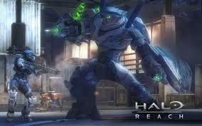

The campaigns in halo are some of the best around just watch this
So on this page we will be talking about them and the multi players and some tips to go with them
Campaign tips
Tip 1 don't try to melee a hunter
Tip 2 Scorpions aren't indestructible especially in legendary don't forget or you dead
Tip 3 Eliminate suicide grunts on sight or they will blow up in your face
Tip 4 Do use vehicles provided because its often a long walk with a lot of enemies in your path
Tip 5 If you eliminate the elite or brute that accompany jackals and grunts, the grunts and jackals will run away
Tip 6 Grunts with plasma launcher are more deadly than they look
Tip 7 Younger siblings are not good team mates its easier to go alone
And now for some multi player tips
Tip 1 Your very weak in multi player so don't try anything smart
Tip 2 look for weapon pick ups they can turn the tide of battle
Tip 3 Try out all the game modes don't just stick to the first one you find